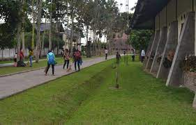

Institut Teknologi Del (IT Del) menyediakan fasilitas perumahan untuk dosen dan staf
kantin
Kantin Politeknik Informatika Del menyediakan menu makanan yang bergizi dan sehat
untuk semua mahasiswa/i.
Perpustakaan
Perpustakaan Politeknik Informatika Del (PI Del) berdiri sejak tanggal 9 Januari
2002
Hiburan dan Olahraga
Selain fasilitas untuk keperluan proses belajar mengajar, IT Del juga menyediakan
sarana hiburan dan olahraga
Ruang Terbuka
Saat kita memperhatikan lingkungan kampus di Indonesia maka mungkin hasilnya akan
bertolak belakang dengan saat kita membayangkan lingkungan kampus di negara-negara
maju.

Klinik
Praktek umum dokter Del resmi didirikan pada bulan Mei tahun 2009,